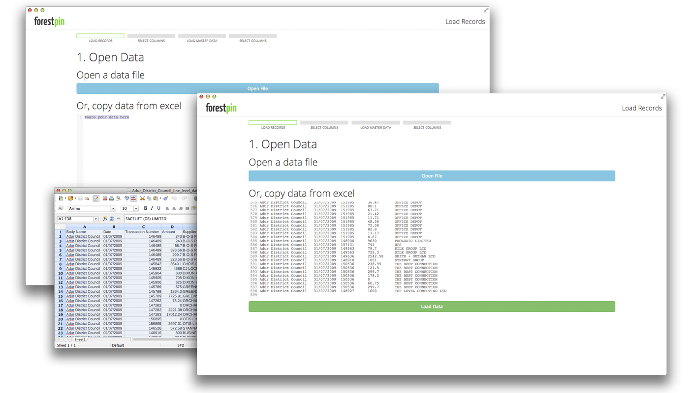

We are releasing Forestpin Lite, with a lot of improvements to our previous Forestpin Lite version released at the 24th Fraud Conference in June. The new version is packaged as a Google Chrome offline application and therefore runs on Windows, Mac and Linux platforms. Chethiya Abeysinghe was behind Forestpin Lite.
Forestpin Lite
December 1, 2013

Forestpin Lite was developed since we felt that most auditors are using standard spreadsheet software and analyzing data manually, which is a waste of their precious time. One of the reasons to rely on spreadsheets is that auditors have access to them easily. Most risk management software are designed for large corporations and not for individual auditors/accountants; therefore those are expensive and purchase is a corporate level decision. Spreadsheets is a great tool but it is not developed with focus on analytics. So doing even a simple analysis like stratifying can be tedious.
It started as a side project, while working on Forestpin Enterprise which is our main product. Forestpin Lite was a very simple tool, intended for auditors and accountants who wanted to analyse their transaction data. We've held on to that; even as the internals of the software got complicated, we have kept the usage of the software simple.
We believe humans are much better at judgement than computers, and computers are better at doing lots and lots of calculations very quickly. It is not like in medicine where each test has a monetary cost, takes a lot of time, and is harmful for the patient; where the doctor has to think and decide which tests the patient should go through. With data analytics, the computer could do a lot of calculations in a couple of seconds. Therefore, it is better to waste a few seconds of computer-time and do all analyses instead of asking the user to decide which analysis to run and configure parameters.
Our team has tried to make using Forestpin Lite as easy as copy and paste - just paste your data and select fields and it will do all possible analyses. The user can then sit back and decide whats going on. We even try to select the fields automatically when possible and it will get better with next releases.

We have also put effort to keep it good looking unlike most accounting/auditing software out there. It wasn't hard since we don't have a lot of clutter.

Keeping this simple was not easy, and we had to make some tough decisions in doing so. Some useful features like filtering and joining tables were left out since it would complicate the software for an average user. However, we are working hard on introducing these as soon as we figure out a design to accompany them without losing the elegance.
Hear are some thoughts on what we will be working on next, and I will post some sketches soon.
- Filters
- Multiple datasets - This is when you want to compare different datasets; for example analyzing Goods Received Notes and Invoices to find if there are bad vendors.
- Multiple account types - An example would be analyzing sales data of multiple outlets, where you'ld want to know whether there are major differences in movement of a certain type of goods among outlets.